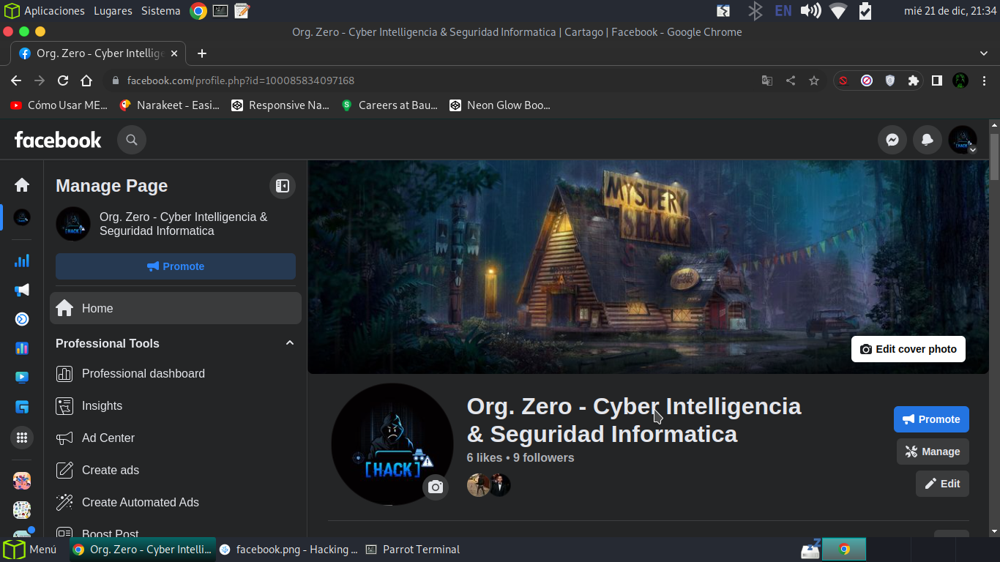
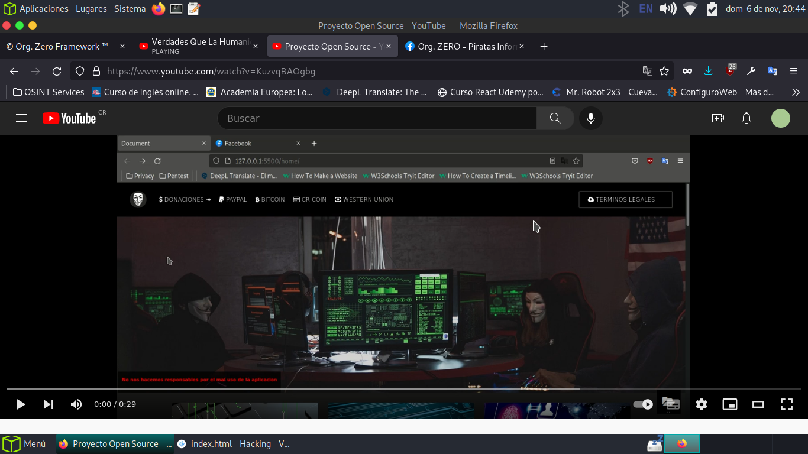
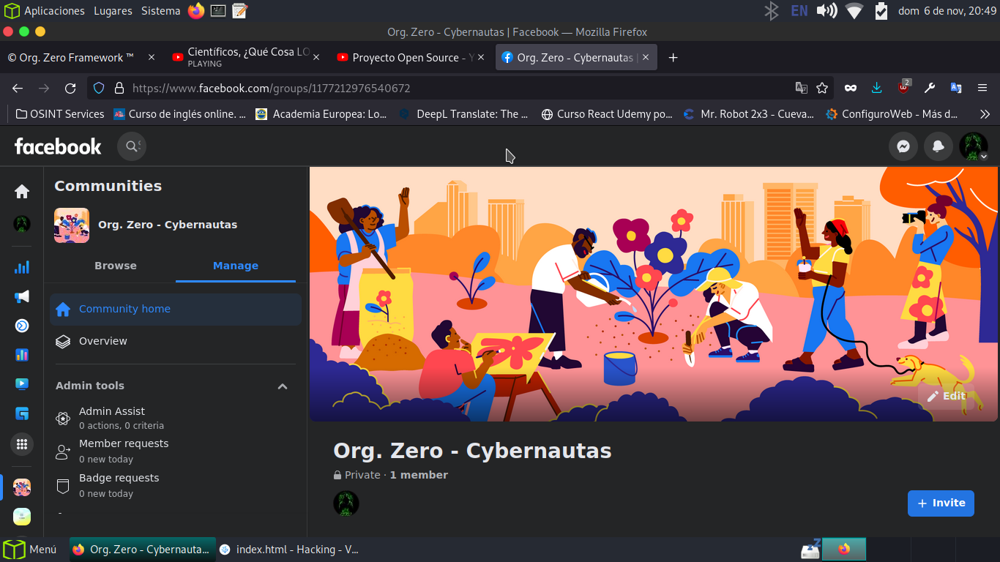

– Esta web fue desarrollada para enseñar tecnicas sencillas y avanzadas de seguridad informatica,
uso y explciacion de cada heramineta en vectores de ataque reales.
– “La terminología, y nuestros medios de intercambio de información, han cambiado hasta el punto que muchas
discusiones esenciales en la “era de las comunicaciones” actuales serían completamente incomprensibles hace
muchas décadas.
– A medida que el entorno social, político y tecnológico se ha desarrollado, algunos ya han comenzado a explorar nuevas opciones,
aprovechando nuevas oportunidades para el activismo digital, por lo que pronto más personas se nos unirán”.
– “Hoy en día, la tecnología está en todas partes, en bancos y cajeros automáticos, televisores y consolas de juegos,
farolas y hospitales. Los ordenadores gobiernan el mundo moderno.
– Sin embargo, la mayoría de las personas que usan ordenadores todos los días no saben lo que están haciendo”.
– Por eso vengo aportar un grano de mi conocimiento.
- Nota : Don´t Make Hackers Wild -
Herramientas de Hacking
En este tutorial y blog de seguridad informatica se explicara el uso de cada herramienta.
Nmap
Nmap ("Mapeador de red") es un gratuita y de código abierto utilidad para Descubrimiento de redes y auditoría de seguridad.
Muchos sistemas y red los administradores también lo encuentran útil para tareas como la red inventario, gestión de programas
de actualización de servicios y supervisión de host o tiempo de actividad del servicio.
Nmap utiliza paquetes IP sin formato de
formas novedosas para determinar qué hosts están disponibles en la red, qué servicios (aplicación nombre y versión) que ofrecen
esos hosts, qué sistemas operativos
(y versiones del sistema operativo) que están ejecutando, qué tipo de paquete filtros/firewalls están en uso, y docenas de otras características.
WPScan
WPScan es un software gratuito que le ayuda a identificar los problemas relacionados con la seguridad en su sitio de WordPress. Hace varias cosas como:
Verifique si el sitio está usando una versión vulnerable de WP
Compruebe si un tema y un complemento están actualizados o si se sabe que son vulnerables
Compruebe Timthumbs
Compruebe la copia de seguridad de la configuración, las exportaciones de bases de datos
Ataque de fuerza bruta
Burpsuite
Principales funcionalidades de Burp Suite
Burp Suite contiene los siguientes componentes principales:
• Proxy de interceptación tráfico de navegación (HTTP y HTTPs).
• Modulo de descubrimiento e indexación de contenido (Spider)
• Escáner de aplicaciones Web
• Herramientas de Fuzzing avanzadas
• Análisis de sesiones
• Soporte de potentes plugins (extensiones)
• Numerosas herramientas colaborativas.
Zaproxy
ZAP
OWASP Zed Attack Proxy es una herramienta integrada para realizar pruebas
de penetración, la cual permite encontrar vulnerabilidades en las aplicaciones
web.
Ha sido diseñada para ser utilizada por personas con diversa experiencia en
seguridad, siendo también ideal para desarrolladores y personas quienes
realizan pruebas funcionales, y nuevos en temas de pruebas de penetración.
ZAP proporciona escaners automáticos como también un conjunto de
herramientas para encontrar de manera manual vulnerabilidades en
seguridad.
Entre sus características más resaltantes se enumeran; es open source,
multiplataforma, fácil de instalar, completamente libre, fácil de utilizar, incluye
completas páginas de ayuda, está traducido a 20 lenguajes, se basa en una
comunidad con desarrollo muy activo.
* ZAP: https://www.owasp.org/index.php/OWASP_Zed_At
Metasploit
Metasploit framework es una herramienta desarrollada en Perl y Ruby en su mayor parte, que está enfocada a auditores de seguridad y equipos Red Team y Blue Team.
Red Team es el equipo ofensivo o encargado del hacking ético, que hace pruebas de intrusión, mientras que el Red Team es el equipo que lleva a cabo la securización y toda la parte defensiva.
Maltego
La herramienta funciona de la siguiente manera:
Maltego envía la petición a los servidores de semillas en formato XML a través de HTTPS.
La petición del servidor de la semilla se da a los servidores TAS que se transmiten a los proveedores de servicios.
Los resultados se envian al cliente Maltego.
La ventaja en este punto, es que podemos tener nuestros propios servidores TAS para mayor privacidad. Actualmente Maltego tiene dos tipos de módulos de servidor: profesional y básica. Las principal diferencia entre estos dos son los módulos disponibles:
el servidor profesional viene con CTAS, SQLTAS y PTTAS; y el servidor de base viene con CTAS.
Dirbuster
DirBuster es una aplicación java de múltiples subprocesos diseñada para directorios
de fuerza bruta y nombres de archivos en la web/aplicación servidores.
A menudo es el caso ahora de lo que parece una web servidor
en un estado de instalación predeterminada en realidad no lo es, y tiene páginas y aplicaciones ocultas en su interior.
DirBuster intentos de encontrar estos.
Sin embargo, las herramientas de esta naturaleza son a menudo tan buenas como las directorio y lista de archivos con los que vienen.
Una diferente se tomó el enfoque para generar esto. la lista era generado desde cero, rastreando Internet y recopilar el directorio y los archivos que se utilizan realmente por los desarrolladores!
DirBuster viene con un total de 9 diferentes listas, esto hace que DirBuster sea extremadamente efectivo para encontrar esos archivos y directorios oculto
Dnsenum
El propósito de DNSenum es capturar tanta información como sea posible sobre un dominio. El programa actualmente realiza las siguiente operaciones.
Obtener la dirección del host (Registro A)
Obtener los servidores de nombre
Obtener el registro MX
Realizar consultas axfr sobre los servidores de nombre y obtener la versión de Bind.
Obtener nombres y subdominios adicionales mediante google (consulta de google como “allinurl: -www site:dominio”)
Fuerza Bruta a subdominios desde un archivo, también puede realizar recursividad sobre subdominios que tienen registros NS.
Calcula los rangos de redes de dominio de clase C y realiza una consulta whois sobre ellos.
Realiza consultas inversas sobre los rangos de red ( Clase C o/y whois a los rangos de red)
Escribir al archivo domain_ips.txt bloques de IP.
Acerca de la creacion de este blog
Desde los 14 empeze en el mundo de la informatica, conforme pasaba el tiempo,
fui adquiriendo nuevos conocimientos con lo cual quiero compartir con otros usuarios.
- Aaron P. -
Canales y Comunidades
Facebook Pagina :

Youtube

Facebook Comunidad :

Shodan
Más allá de la web
Los sitios web son solo una parte de Internet. Usa Shodan para descubrir todo, desde plantas de energía, teléfonos móviles, refrigeradores y servidores de Minecraft.
Supervisar la exposición de la red
Realice un seguimiento de todos sus dispositivos a los que se puede acceder directamente desde Internet. Shodan proporciona una vista integral de todos los servicios expuestos para ayudarlo a mantenerse seguro.
Inteligencia de Internet
Obtenga más información sobre quién está usando varios productos y cómo están cambiando con el tiempo. Shodan le brinda una vista basada en datos de la tecnología que impulsa Internet.
Para Desarrolladores!
Toda la plataforma Shodan (rastreo, búsquedas de IP, búsqueda, transmisión de datos) está disponible para los desarrolladores. Use nuestra API para comprender si los usuarios se conectan desde una VPN, si el sitio web que está visitando se ha visto comprometido y más.